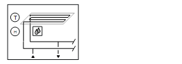

[CCr21] 冷却回路、预控制、露点补偿流量温度控制
工厂示例 CCr21 是用于预控制的冷却回路。
Functions
- Collects cooling requests
- Controls flow temperature
- Calculates dew point temperature and shifts the flow temperature setpoint
Plant diagram

Components
- Pump
- Valve
- Flow and return temperature sensor
- Room temperature sensor and room air humidity sensor
- Condensation monitor
- Outside air temperature sensor
设备示例的组件和功能：
成分 | 功能 | BACnet object |
|---|---|---|
| Scheduler program 将设备切换至运行模式：Off |在 | [MSchedule]Scheduler |
| Operating mode switch 将设备切换至：自动 |关闭 |在 | [MI]Operating mode switch |
| Manual operating mode selection 将设备切换至：自动 |关闭 |在 | [MCnfVal]Manual operating mode selection |
| Present operating mode 锅炉 1 (100 __VAR_000__) 是调节锅炉，旨在作为冬季运行的主锅炉。 | [MCalcVal]Present operating mode |
| Reason for present operating mode 报告当前操作模式的原因：异常 |工作模式切换 |手动操作模式选择|冷却要求|调度程序 | [MCalcVal]Reason for present operating mode |
| Demand 报告热量产生需求：否|是的 | [BCalcVal]Demand |
| Outside air temperature sensor 测量室外温度。 | [AI] 室外气温 |
 | Room functions |
|
Room temperature sensor 测量室温。 | > [AI] 室温 | |
Room humidity sensor 测量室内空气湿度。 | > [AI]Room air humidity | |
Dew point temperature calculation 计算露点温度。 例如，将露点温度提高 1K，并修正流动温度的设定值。 | > [ACalcVal] 露点温度 | |
Condensation monitor 监测室内空气湿度 在室内湿度过高时关闭设备，例如在冷冻天花板区域。 | [BI]Condensation monitor | |
| Flow temperature sensor 测量流动温度。 | [AI] 流动温度 |
| Pump |
|
命令 根据需要打开/off 泵。 | > [BO] Command | |
故障信息 报告故障。 此__VAR_000__中，风道面积仅供用户参考；它不用于阻尼器位置计算。没有系数对象或系数计算逻辑。 | > [BI] Fault | |
外部气温较低时泵运行 泵始终在较低的外部温度下运行（防冻）。 |
| |
反冲功能（泵反冲） 防止泵在长时间闲置期间卡住。 |
| |
| Return temperature sensor 测量回水温度。 | [AI]Return temperature |
| Mixing valve 混合返回到流动的所需量的水，以达到所需的流动温度。 |
|
温度控制器 控制流动温度。 | > [控制器]Temperature controller | |
定位 0% = Bypass … 100% = 直通端口 | > [AO] 位置 |


 Room functions (
Room functions (


工厂示例CCr21是用于预控制的冷却回路；流动温度可以根据露点温度改变。
Outside temperature
外部温度 [TOa] 未经过滤。
信号名称 | 描述 | 滤波器常数 | 使用 |
|---|---|---|---|
TOa | 室外温度 | 未过滤 | 外部气温较低时泵运行 |
Collect cooling requests
可以从不同的消费者收集冷却需求。还可以收集二进制需求消息和模拟需求设定点。
该程序接收可通过 BACnet 链接到二进制需求消息的 R_B 类型输入块 (CReq(1)) 和用于模拟需求设定点的 R_A 类型 (SpCReq(1)) 输入块。
[R_B] Read binary
[R_A] Read analog
其他需求信号可以并行连接：二进制连接到 OR 并模拟连接到 MAX 块。
Flow temperature control
流动温度设定点源自热量请求下限设定点 (SpHReqX) 和流动温度设定点。
BACnet objects
姓名 | 描述 | 对象类型 | 默认值 |
|---|---|---|---|
PrSpTFl | Present flow temperature setpoint | ACalcVal |
|
SpTFl | Flow temperature setpoint | ACnfVal | 16 [°C] |
TDwp | 露点温度 | ACalcVal |
|
露点温度是使用室温和室内空气湿度计算的。它增加 1K，这也会增加流量温度设定值（最大选择）。
BACnet objects
姓名 | 描述 | 对象类型 | 默认值 |
|---|---|---|---|
Vlv'TCtr | 温度控制器 控制流动温度。 | 控制器 | N/A |
温度控制器充当 PI 控制器（PID，微分作用时间 Tv=0），将温度设定点 [PrSpTFl] 与流量温度 [TFl] 进行比较，并计算输出上的阀门位置 [Pos]。 预设了以下控制器变量： | |||
工厂运行模式：
- Off (1)
- On (2)
操作模式在 [MCalcVal] 对象“当前操作模式”上报告。
同时，将当前操作模式的原因报告给另一个 [MCalcVal] 对象：
- Exception (1)
- Operating mode switch (2), resulting from an active (not equal to Auto) operating mode switch
- Manual operating mode selection (3), resulting from an active (not equal to Auto) manual operating mode selection
- Cooling request (4)
- Scheduler (5), resulting from an active scheduler
有正常模式和局部异常模式。
Normal mode
正常模式的来源：
- [MI] Operating mode switch
- [MCnfVal] Manual operating mode selection
- Cooling request
- [MSchedule] Scheduler
在正常模式下，组件根据操作模式同时打开和关闭。
Exception mode
异常模式的来源：
- Pump fault
- Condensation monitor
在例外模式下，所有输出均以优先级 5 直接关闭（混合阀切换至旁路），并且当前操作模式设置为“关闭”。
Start-up control (nested chart SttUpAlmHdl)
以下功能可用于设备的自动启动，例如断电和恢复供电后：
- Fixed switch-on delay (can be set on input pin [DlySttUp])
- The plant remains off to ensure communications are reliable and cross-check references are triggered. 'Exception' is reported as the reason for the present operating mode.
- Automatic acknowledge (2x) of possible pending alarms during a fixed switch-on delay.
- Additional adjustable delay for staged plant ramp-up (can be set on input pin [DlyOn])
Alarm handling (nested chart SttUpAlmHdl)
工厂事件的状态通过 BACnet 对象“工厂状态”获取。状态映射到功能块 CMN_EVT 上。
[CMN_EVT] Common event
可以使用以下功能：
- Automatic acknowledge (2x) after startup
- Alarm acknowledgement with a value object
- Alarm indication:
- For pending alarms On
- For unprocessed alarms flashing - Ability to connect the acknowledge button [BI]
- Ability to connect to an alarm indication [BO], e.g. an alarm lamp through an output block [BO]
- Ability to connect to other alarm handling functions on other plants, e.g. acknowledge button and alarm indication for multiple plants in the same control cabinet
姓名 | 描述 | 类型 | Signal/connection | 状态文本 | 工程单位 |
|---|---|---|---|---|---|
OpModSwi | Operating mode switch | MI | N/A | 汽车 |关闭 |在 | N/A |
TOa | Outside temperature | AI | LG-Ni1000 | N/A | -70...70 [°C] |
TFl | 流动温度 报警功能：基本（通知等级 8） Limit high 20 [°C]; limit low 4 [°C] 时间偏差30[s] | AI | LG-Ni1000 | N/A | 0...100 [°C] |
TRt | Return temperature 报警功能：基本（通知等级 8） Limit high 20 [°C]; limit low 4 [°C] 时间偏差30[s] | AI | LG-Ni1000 | N/A | 0...100 [°C] |
CdnMon | Condensation monitor 报警功能：基本（通知等级 8） 参考值：Tripped 时间偏差：0[s] | BI | NO contact | Normal | Tripped | N/A |
Vlv-位置 | 阀门位置 | AO | 0...10V | N/A | 0...100 [%] |
普命令 | 泵命令 | BO | NO contact | 关闭 |在 | N/A |
普福尔特 | 泵故障 报警功能：扩展（通知等级 7） 参考值：Tripped 时间偏差0[s] | BI | NO contact | Normal | Tripped | N/A |
TR | Room temperature | AI | LG-Ni1000 | N/A | 0...50 [°C] |
HuR | Room air humidity | AI | 0...10V | N/A | 0...100 [%RH] |